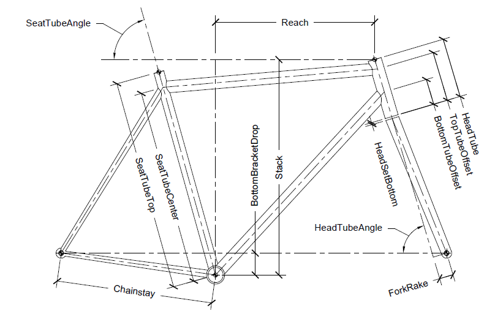

These are the measurements of the Frame. The frame defines all the connection points for components.
This is the length of the chainstay.
This is the distance the bottom bracket drops from the horizontal line defned by the wheel centers.
This is the vertical delta from the center of the bottom bracket to the top of the head tube.
This is the horizontal delta from the center of the bottom bracket to the top of the head tube.
This is the length of the seat tube from the center of the bottom bracket to the top of the seat tube.
This is the length from the center of the bottom bracket to the intersection of the top tube and seat stay.
This is the distance to the front wheel from the projected head tube line.
This is the angle of the seat tube measured clockwise from horizontal.
This is the angle of the head tube measured clockwise from horizontal.
This is the length of the head tube.
This is distance from the bottom of the head tube to the intersection of the top tube. This value is arbitary if not meassured as it is not provided by manufactures.
This is distance from the bottom of the head tube to the intersection of the bottom tube. This value is arbitary if not meassured as it is not provided by manufactures.
This is depth of the bottom headset (or gap) if present before the forks. This can be zero if there is no exposed bottom headset.